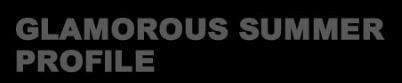

東京五輪を目指す 宮川紗麻亜
GLAMOROUS SUMMER
OFFICIAL SITE


2018 ENTEY SCHEDULE
- ☆ジャパンツアー☆
- 第5戦 ７/15.16
大会（ランキング上位16チーム） - 第6戦 ７/28.29
大会（ランキング上位16チーム）
-
第7戦 8/4.5
大会（ランキング上位16チーム）
-
第8戦 9/1.2
大会（ランキング上位16チーム）
-
第9戦 9/15.16.17
大会（ランキング上位16チーム）
※第32回8/10.11.12
ビーチバレージャパン 藤沢巿鵚沼海岸


 ※Qinzhou（中国 日本）3star 9/30~10/4
※Qinzhou（中国 日本）3star 9/30~10/4
※Yangzhou（中国 台湾）4star 10/10~10/14

ジャパンツアー2018 第4戦
南あわじ・神戸淡嗚門自動車道全通
20周年記念大会 女子決勝
宮川紗麻亜／井桜藤子 vs 西堀健実／草野歩

-
【名前】宮川 紗麻亜
【経歴】
八王子実践高等学校卒
日本女子体育大学卒
GSSサンビームス(Vチャレンジリーグ)
2011年よりビーチバレーボールへ転校
-
【バレーボールの主な戦績】
2011年新人賞
【2011年】
JBVツアー第1戦 ファイティンビーチバレー東京オープン 第3位
2011年新人賞
-
【2013年】
ビーチバレージャパン 準決勝
-
【2014年】
JVAツアー川崎大会 第3位>
-
【2015年】
JBAツアー第2戦 東京オープン 3位
-
【2016年】
ジャパンビーチバレーボールツアー2016 第9戦 お台場大会/マイナビシリーズ 3位
-
JBAサテライト第3戦 越谷大会/大石カップ 優勝
JBAサテライト第4戦 岐阜大会 優勝
-
【2017年】
ジャパンビーチバレーボールツアー2017 第1戦東京大会 優勝
-
【2018年】
ジャパンビーチバレーボールツアー2018
第4戦南あわじ・神戸淡嗚門自動車道全通20周年記念大会 優勝